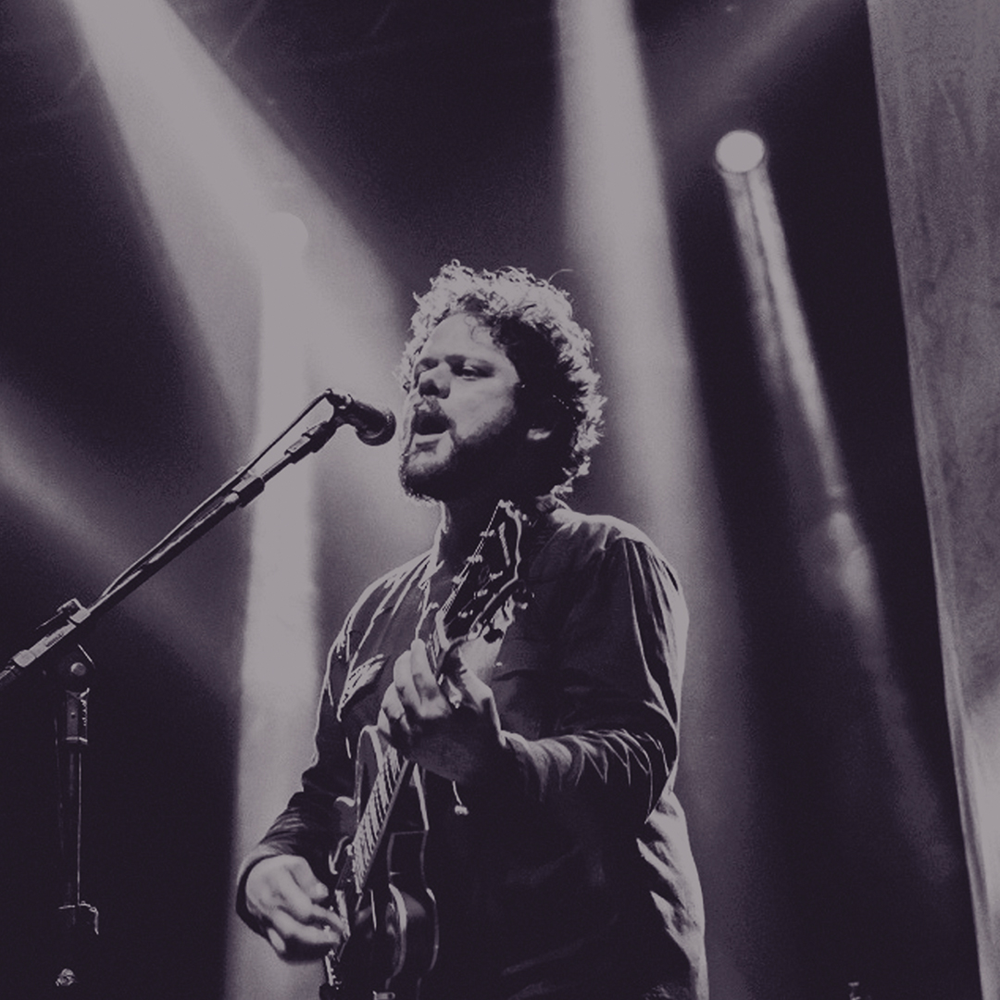

Palavrantiga
Palavrantiga é uma banda brasileira de rock alternativo formada em meados de 2007, quando seus integrantes eram a banda de apoio da cantora Heloisa Rosa, e com incentivo da própria, vendo algumas composições de Marcos Almeida, decidiram montar um grupo musical. Com a artista, os membros do quarteto lançaram três álbuns. Em 2008 lançaram o primeiro trabalho do grupo, o EP Palavrantiga - Volume 1, que mais tarde seria uma prévia de seu primeiro CD, Esperar é Caminhar, com distribuição da CanZion e produzido pelo cantor Silva. O disco recebeu positivas avaliações da mídia especializada e do público, que, mais tarde levou o Palavrantiga a ser indicado na categoria Revelação no Troféu Promessas. Em novembro de 2012, pela gravadora Som Livre, o quarteto lançou o projeto Sobre o Mesmo Chão, produzido por Jordan Macedo e gravado com composições inteiramente autorais, assim como o anterior. A obra, diferentemente da anterior trouxe arranjos e uma proposta musical mais "abrasileirada", com letras tematicamente mais complexas. Sua versão digital foi destaque nos primeiros dias de venda. O grupo é marcado como um dos principais representantes do novo movimento, o qual as bandas Aeroilis e Tanlan foram precursoras, na intenção de não se limitarem as barreiras religiosas de criação musical e de público, com influência da filosofia de Hans Rookmaaker. Em 2014, o vocalista Marcos Almeida anunciou sua saída da banda. O grupo se dissolveu,mas retornou no ano de 2018.
Albuns
- Palavrantiga Vol. 1 - 2008
- Esperar é Caminhar - 2010
- Sobre O Mesmo Chão - 2012
Músicas polulares
- De Manhã
- Rookmaaker
- Boa nova
- Sagrado
- Sobre O Mesmo Chão
Gostou? Ouça as músicas no Youtube: Palavrantiga